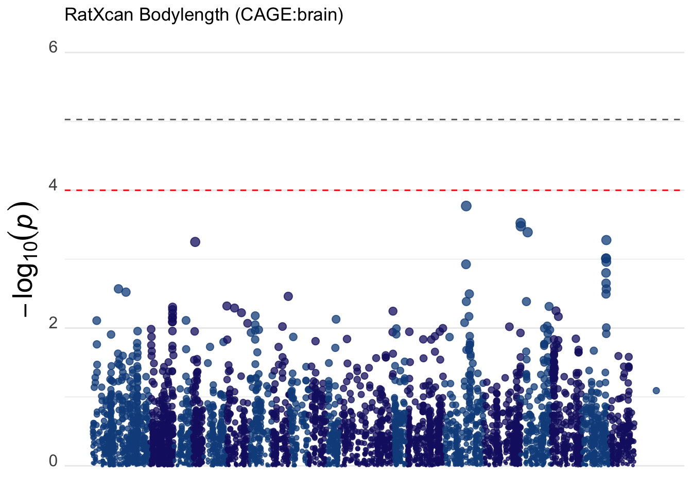

## compare observed correlation with null correlation plotting functions
suppressMessages(devtools::source_gist("a925fea01b365a8c605e")) ## qqR fn https://gist.github.com/hakyim/a925fea01b365a8c605e
suppressMessages(devtools::source_gist("38431b74c6c0bf90c12f")) ## qqunif https://gist.github.com/hakyim/38431b74c6c0bf90c12f
## ratxcan functions
suppressMessages(devtools::source_gist("115403f16bec0a0e871f3616d552ce9b")) ## https://gist.github.com/hakyim/115403f16bec0a0e871f3616d552ce9b
suppressMessages(library(tidyverse))
suppressMessages(library(glue))
suppressMessages(library(readr))
suppressMessages(library(biomaRt))
## to install qvalue
## if (!require("BiocManager", quietly = TRUE))
## install.packages("BiocManager")
## BiocManager::install("biomaRt")Preliminary Computations
Predict Expression
PRE="/Users/sabrinami/Desktop/RatXcan"
OUTPUT="$PRE/output"
MODEL="$PRE/models"
GENO_PREFIX="$PRE/Br_data/genotype/Br_bodylen_bmi"
METAXCAN="/Users/sabrinami/Github/MetaXcan"conda activate imlabtools
tissues="AC IL LH PL VO"
for model in $tissues; do
python ${METAXCAN}/software/Predict.py \
--model_db_path ${MODEL}/${model}-filtered.db \
--model_db_snp_key rsid \
--vcf_genotypes ${GENO_PREFIX}.vcf.gz \
--vcf_mode genotyped \
--liftover ${PRE}/rn7ToRn6.over.chain.gz \
--on_the_fly_mapping METADATA "{}_{}_{}_{}" \
--prediction_output $OUTPUT/Br_bodylen_bmi_${model}__predict.txt \
--prediction_summary_output $OUTPUT/Br_bodylen_bmi_${model}__summary.txt \
--throw
done
Prepare Inputs for Mixed Effects Model
PRE <- "~/Desktop/RatXcan"
OUTPUT <- glue("{PRE}/output")Read in GRM, h2, and phenotypes
## read grm
grm_mat <- read_GRMBin(glue("{OUTPUT}/Br_bodylen_bmi.grm"))
grm_id <- read_tsv(glue("{OUTPUT}/Br_bodylen_bmi.grm.id"), col_names = FALSE)Rows: 324 Columns: 2
── Column specification ────────────────────────────────────────────────────────
Delimiter: "\t"
chr (1): X2
dbl (1): X1
ℹ Use `spec()` to retrieve the full column specification for this data.
ℹ Specify the column types or set `show_col_types = FALSE` to quiet this message.names(grm_id) <- c("FID","IID")
## read h2
tempo <- read_tsv(glue("{OUTPUT}/bodylen_h2.hsq")) %>% filter(Source=="V(G)/Vp")Warning: One or more parsing issues, call `problems()` on your data frame for details,
e.g.:
dat <- vroom(...)
problems(dat)Rows: 10 Columns: 3
── Column specification ────────────────────────────────────────────────────────
Delimiter: "\t"
chr (1): Source
dbl (2): Variance, SE
ℹ Use `spec()` to retrieve the full column specification for this data.
ℹ Specify the column types or set `show_col_types = FALSE` to quiet this message.bodylen_h2 <- tempo %>% pull(Variance)
bodylen_se <- tempo %>% pull(SE)
## read phenotype
pheno_df <- read_tsv(glue("{PRE}/Br_data/phenotype/pheno.fam"), col_names = FALSE)Rows: 324 Columns: 4
── Column specification ────────────────────────────────────────────────────────
Delimiter: "\t"
chr (1): X2
dbl (3): X1, X3, X4
ℹ Use `spec()` to retrieve the full column specification for this data.
ℹ Specify the column types or set `show_col_types = FALSE` to quiet this message.names(pheno_df) <- c("FID","IID","bodylen","bmi")Run LMM Association
## HERE WE USE THE FULL GRM MATRIX AND CALCULATE THE INVERSE OF THE SIGMA MATRIX}
## define lmm association function
lmmGRM = function(pheno, grm_mat, h2, pred_expr, pheno_id_col=2,pheno_value_cols=6:6,out=NULL)
{
## input pheno is a data frame with id column pheno_id_col=1 by default
## phenotype values are in pheno_value_cols, 6:6 by default (SCORE column location in plink output), it can have more than one phenotype
## but h2 has to be the same, this is useful when running simulations with different h2
## call lmmXcan(pheno %>% select(IID,SCORE))
## format pheno to matrix form
phenomat <- as.matrix(pheno[,pheno_value_cols])
rownames(phenomat) <- pheno[[pheno_id_col]]
## turn pred_expr into matrix with rownames =IID, keep only IIDs in ymat
exp_mat = as.matrix(pred_expr %>% dplyr::select(-IID))
rownames(exp_mat) = pred_expr$IID
## align pheno and expr matrices
idlist = intersect(rownames(phenomat), rownames(exp_mat))
nsam = length(idlist)
## number
num_genes <- ncol(exp_mat)
print(glue("{nsam} samples, {num_genes} genes used in association test"))
## CALCULATE SIGMA
ID_mat = diag(rep(1,nsam))
Sigma = grm_mat[idlist,idlist] * h2 + (1 - h2) * ID_mat
Sig_eigen = eigen(Sigma)
rownames(Sig_eigen$vectors) = rownames(Sigma)
isighalf = Sig_eigen$vectors %*% diag( 1 / sqrt( Sig_eigen$values ) ) %*% t(Sig_eigen$vectors)
## perform raw association
cormat_raw = matrix_lm(phenomat[idlist,, drop = FALSE], exp_mat[idlist,])
pmat_raw = cor2pval(cormat_raw,nsam)
colnames(pmat_raw) <- gsub("cor_", "pval_", colnames(pmat_raw))
## perform corrected association
cormat_correct = matrix_lm(isighalf%*% phenomat[idlist,, drop = FALSE], isighalf %*% exp_mat[idlist,])
pmat_correct = cor2pval(cormat_correct,nsam)
colnames(pmat_correct) <- gsub("cor_", "pval_", colnames(pmat_correct))
# write outputs to file
if(!is.null(out))
{
saveRDS(cormat_correct,file = glue("{out}_cormat_correct.RDS"))
saveRDS(pmat_correct, file = glue("{out}_pmat_correct.RDS"))
saveRDS(cormat_raw, file = glue("{out}_cormat_raw.RDS"))
saveRDS(pmat_raw, file = glue("{out}_pmat_raw.RDS"))
}
res = list(
cormat_correct=cormat_correct,
pmat_correct=pmat_correct,
cormat_raw=cormat_raw,
pmat_raw=pmat_raw)
return(res)
}Association Tests using PredictDB models (Elastic Net)
trait = "bodylen"
h2 = bodylen_h2
h2se = bodylen_h2+bodylen_se
pred_expr <- read_tsv(glue("{OUTPUT}/Br_CAGE_brain__predict.txt")) %>%
dplyr::select(-FID) %>% # Remove the FID column
mutate(IID = str_split(IID, "_", simplify = TRUE)[, 1]) # Keep the first part of IIDRows: 324 Columns: 22878
── Column specification ────────────────────────────────────────────────────────
Delimiter: "\t"
chr (2): FID, IID
dbl (22876): ENSRNOG00000066169, ENSRNOG00000070168, ENSRNOG00000070901, ENS...
ℹ Use `spec()` to retrieve the full column specification for this data.
ℹ Specify the column types or set `show_col_types = FALSE` to quiet this message.res_h2 <- lmmGRM(pheno_df,grm_mat, h2, pred_expr,pheno_id_col=2, pheno_value_cols=which(colnames(pheno_df)==trait), out=glue("{OUTPUT}/Br_bodylen_bmi_CAGE_brain"))324 samples, 22876 genes used in association testWe plot raw and corrected p-values for VO tissue to confirm inflation.
#png(glue("{OUTPUT}/bodylen-AC-lmmGRM.png"))
qqunif.compare(res_h2$pmat_raw,res_h2$pmat_correct,main=glue("RatXcan bodylength, VO tissue") )Aggregate p-values across tissues as ACAT p-values.
AC_pval = readRDS(glue("{OUTPUT}/Br_bodylen_bmi_AC_pmat_correct.RDS"))
IL_pval = readRDS(glue("{OUTPUT}/Br_bodylen_bmi_IL_pmat_correct.RDS"))
LH_pval = readRDS(glue("{OUTPUT}/Br_bodylen_bmi_LH_pmat_correct.RDS"))
PL_pval = readRDS(glue("{OUTPUT}/Br_bodylen_bmi_PL_pmat_correct.RDS"))
VO_pval = readRDS(glue("{OUTPUT}/Br_bodylen_bmi_VO_pmat_correct.RDS"))
## Get list of common genes across all tissue
genes <- Reduce(intersect, list(rownames(AC_pval), rownames(IL_pval), rownames(LH_pval), rownames(PL_pval), rownames(VO_pval)))
print(glue("{length(genes)} genes with ACAT p-values"))4077 genes with ACAT p-valuespval_df <- data.frame(
AC = AC_pval[genes,"bodylen"],
IL = IL_pval[genes,"bodylen"],
LH = LH_pval[genes,"bodylen"],
PL = PL_pval[genes,"bodylen"],
VO = VO_pval[genes,"bodylen"]
)
pval_df$ACAT <- rowMeans(pval_df)
pval_df$geneId = genesManhattan plot of ACAT p-values:
## here
library(ggrepel)
gg_manhattan <- function(df, titulo="",significance_threshold = 0.05) {
## USAGE: gg_manhattan(df,0.05)
## df has columns: pvalue, chr (numeric), and start (position)
## significance threshold gets divided by the number of tests
# Calculate cumulative base pair positions
data_cum <- df %>%
group_by(chromosome) %>%
summarise(max_bp = as.numeric(max(start)), .groups = 'drop') %>%
mutate(bp_add = lag(cumsum(max_bp), default = 0))
gwas_data <- df %>%
inner_join(data_cum, by = "chromosome") %>%
mutate(bp_cum = start + bp_add)
# Calculate axis labels
axis_set <- gwas_data %>%
group_by(chromosome) %>%
summarize(center = mean(bp_cum), .groups = 'drop')
# Determine the ylim based on the most significant p-value
ylim <- gwas_data %>%
filter(ACAT == min(ACAT)) %>%
summarise(ylim = abs(floor(log10(ACAT))) + 2) %>%
pull(ylim)
# Calculate the genome-wide significance level
sig <- significance_threshold / nrow(df)
# Construct the Manhattan plot
manhattan_plot <- ggplot(gwas_data, aes(x = bp_cum, y = -log10(ACAT), color = as.factor(chromosome), size = -log10(ACAT))) +
geom_hline(yintercept = -log10(sig), color = "grey40", linetype = "dashed") +
geom_hline(yintercept = -log10(0.0001), color = "red", linetype = "dashed") +
geom_point(alpha = 0.75, shape = 19) + # Simplified shape decision for clarity
geom_label_repel(aes(label = ifelse(ACAT <= sig, geneSymbol, "")), size = 3) +
ylim(c(0, ylim)) +
scale_x_continuous(labels = axis_set$chromosome, breaks = axis_set$tss) +
scale_color_manual(values = rep(c("dodgerblue4", "midnightblue"), length(unique(axis_set$chromosome)))) +
scale_size_continuous(range = c(0.5, 3)) +
labs(x = NULL, y = expression(-log[10](italic(p)))) +
theme_minimal() +
theme(legend.position = "none",
panel.border = element_blank(),
panel.grid.major.x = element_blank(),
panel.grid.minor.x = element_blank(),
axis.text.x = element_text(angle = 90, size = 12),
axis.text.y = element_text(size = 12, vjust = 0),
axis.title = element_text(size = 20))
if(titulo !="") manhattan_plot = manhattan_plot + ggtitle(titulo)
return(manhattan_plot)
}gene_annot <- read.delim(glue("{PRE}/rn7.gene.txt"), header = TRUE, sep = "\t", stringsAsFactors = FALSE)[,c(1:5,7)]
res <- inner_join(pval_df, gene_annot, by="geneId")There are no Bonferroni significant genes, but these are lowest p-values:
print(res %>% arrange(ACAT) %>% head(n=20)) %>% dplyr::select(geneSymbol, ACAT) AC IL LH PL VO
1 0.0002984457 0.0003330477 0.0003093574 0.0002950438 0.0002984457
2 0.0003969484 0.0002922556 0.0003969484 0.0002956643 0.0003329209
3 0.0005406986 0.0004107848 0.0004082666 0.0004066414 0.0004066414
4 0.0009696896 0.0009691317 0.0009667042 0.0009671762 0.0009703929
5 0.0009785745 0.0009788197 0.0009785084 0.0009787353 0.0009786740
6 0.0010306494 0.0010283724 0.0010971622 0.0011019875 0.0010983766
7 0.0015846240 0.0015928800 0.0015843785 0.0015846240 0.0015839994
8 0.0022564322 0.0022144255 0.0022353553 0.0022298055 0.0022381752
9 0.0027014963 0.0027001104 0.0027014963 0.0027014963 0.0026982814
10 0.0028384527 0.0027937299 0.0028384527 0.0028523556 0.0027110032
11 0.0031485961 0.0032724711 0.0031176076 0.0030496773 0.0032045296
12 0.0031954315 0.0031583542 0.0031954315 0.0031954315 0.0031954315
13 0.0035013595 0.0034654536 0.0034654536 0.0033859357 0.0034654536
14 0.0042882871 0.0043801239 0.0039551183 0.0044868369 0.0041227017
15 0.0053768333 0.0041272187 0.0040159757 0.0042989843 0.0041272187
16 0.0047327362 0.0053746206 0.0053746206 0.0043961506 0.0047870423
17 0.0052465046 0.0052424070 0.0052368014 0.0052482310 0.0049728783
18 0.0053991899 0.0058920315 0.0056152301 0.0054116775 0.0053991899
19 0.0057914618 0.0056891371 0.0057414924 0.0058234307 0.0056891371
20 0.0098620403 0.0033040490 0.0032601484 0.0044024009 0.0083620611
ACAT geneId geneSymbol chromosome start end
1 0.0003068681 ENSRNOG00000024525 Alkbh8 6 378100 452165
2 0.0003429475 ENSRNOG00000040045 Crnkl1 6 1140615 1142918
3 0.0004346066 ENSRNOG00000028783 Wdr35 6 31771360 31831029
4 0.0009686189 ENSRNOG00000020833 Cspg5 8 110220653 110234758
5 0.0009786624 ENSRNOG00000032134 Uqcrc1 8 109589706 109601480
6 0.0010713096 ENSRNOG00000033809 Mlh1 8 111196468 111233617
7 0.0015861012 ENSRNOG00000020721 Nme6 8 109832589 109839301
8 0.0022348387 ENSRNOG00000020748 Map4 8 109925575 110064362
9 0.0027005761 ENSRNOG00000016327 Mcee 1 117964576 117988484
10 0.0028067988 ENSRNOG00000043006 Epm2aip1 8 111233826 111241871
11 0.0031585763 ENSRNOG00000047225 Tma7 8 109726196 109735474
12 0.0031880160 ENSRNOG00000037871 Sfxn5 4 117752806 117869794
13 0.0034567312 ENSRNOG00000030719 Csmd1 16 72218503 73817614
14 0.0042466136 ENSRNOG00000010930 Usp39 4 104373955 104406359
15 0.0043892461 ENSRNOG00000047088 Rab10 6 26266859 26320193
16 0.0049330340 ENSRNOG00000000048 Gak 14 1089866 1216398
17 0.0051893645 ENSRNOG00000011459 Rhbdf2 10 101833157 101860283
18 0.0055434638 ENSRNOG00000012083 St6galnac2 10 101915822 101927933
19 0.0057469318 ENSRNOG00000028328 Tyw3 2 243529946 243552039
20 0.0058381399 ENSRNOG00000005890 Serbp1 4 96401477 96421813
tss
1 452165
2 1140615
3 31771360
4 110220653
5 109589706
6 111233617
7 109832589
8 109925575
9 117964576
10 111233826
11 109735474
12 117869794
13 72218503
14 104406359
15 26320193
16 1089866
17 101860283
18 101927933
19 243552039
20 96401477 geneSymbol ACAT
1 Alkbh8 0.0003068681
2 Crnkl1 0.0003429475
3 Wdr35 0.0004346066
4 Cspg5 0.0009686189
5 Uqcrc1 0.0009786624
6 Mlh1 0.0010713096
7 Nme6 0.0015861012
8 Map4 0.0022348387
9 Mcee 0.0027005761
10 Epm2aip1 0.0028067988
11 Tma7 0.0031585763
12 Sfxn5 0.0031880160
13 Csmd1 0.0034567312
14 Usp39 0.0042466136
15 Rab10 0.0043892461
16 Gak 0.0049330340
17 Rhbdf2 0.0051893645
18 St6galnac2 0.0055434638
19 Tyw3 0.0057469318
20 Serbp1 0.0058381399gg <- gg_manhattan(res, titulo="RatXcan Bodylength (5 tissue aggregate)")Warning: Unknown or uninitialised column: `tss`.# ggsave(glue("{OUTPUT}/bodylen-manhattan-p_AC.png"))
print(gg)Association using Fast Enformer
trait = "bodylen"
h2 = bodylen_h2
h2se = bodylen_h2+bodylen_se
tissues = c("AC", "IL", "LH", "PL", "VO")
pred_expr# A tibble: 324 × 22,877
IID ENSRNOG00000066169 ENSRNOG00000070168 ENSRNOG00000070901
<chr> <dbl> <dbl> <dbl>
1 00077E669E 0.00334 0.00255 1.76
2 00077E75DE 0.00334 0.00277 1.75
3 00077E7666 0.00334 0.00255 1.76
4 00077E76EB 0.00334 0.00255 1.75
5 00077E7819 0.00334 0.00255 1.76
6 00077E7879 0.00334 0.00255 1.76
7 00077E8223 0.00334 0.00255 1.76
8 00077E82E3 0.00334 0.00255 1.76
9 00077E82F7 0.00334 0.00260 1.76
10 00077E8653 0.00334 0.00265 1.75
# ℹ 314 more rows
# ℹ 22,873 more variables: ENSRNOG00000018029 <dbl>, ENSRNOG00000031391 <dbl>,
# ENSRNOG00000068698 <dbl>, ENSRNOG00000064851 <dbl>,
# ENSRNOG00000063562 <dbl>, ENSRNOG00000050129 <dbl>,
# ENSRNOG00000032625 <dbl>, ENSRNOG00000029315 <dbl>,
# ENSRNOG00000016356 <dbl>, ENSRNOG00000028288 <dbl>,
# ENSRNOG00000015810 <dbl>, ENSRNOG00000017538 <dbl>, …for (tissue in tissues){
## read predicted expression
pred_expr <- read_tsv(glue("{OUTPUT}/Br_bodylen_bmi_{tissue}__predict.txt")) %>%
dplyr::select(-FID) %>% # Remove the FID column
mutate(IID = str_split(IID, "_", simplify = TRUE)[, 1]) # Keep the first part of IID
res_h2 <- lmmGRM(pheno_df,grm_mat, h2, pred_expr,pheno_id_col=2, pheno_value_cols=which(colnames(pheno_df)==trait), out=glue("{OUTPUT}/Br_bodylen_bmi_{tissue}"))
}Rows: 324 Columns: 5756
── Column specification ────────────────────────────────────────────────────────
Delimiter: "\t"
chr (2): FID, IID
dbl (5754): ENSRNOG00000015552, ENSRNOG00000016054, ENSRNOG00000049505, ENSR...
ℹ Use `spec()` to retrieve the full column specification for this data.
ℹ Specify the column types or set `show_col_types = FALSE` to quiet this message.324 samples, 5754 genes used in association testRows: 324 Columns: 5809
── Column specification ────────────────────────────────────────────────────────
Delimiter: "\t"
chr (2): FID, IID
dbl (5807): ENSRNOG00000015552, ENSRNOG00000016054, ENSRNOG00000049505, ENSR...
ℹ Use `spec()` to retrieve the full column specification for this data.
ℹ Specify the column types or set `show_col_types = FALSE` to quiet this message.324 samples, 5807 genes used in association testRows: 324 Columns: 5824
── Column specification ────────────────────────────────────────────────────────
Delimiter: "\t"
chr (2): FID, IID
dbl (5822): ENSRNOG00000016054, ENSRNOG00000049505, ENSRNOG00000014330, ENSR...
ℹ Use `spec()` to retrieve the full column specification for this data.
ℹ Specify the column types or set `show_col_types = FALSE` to quiet this message.324 samples, 5822 genes used in association testRows: 324 Columns: 5811
── Column specification ────────────────────────────────────────────────────────
Delimiter: "\t"
chr (2): FID, IID
dbl (5809): ENSRNOG00000016054, ENSRNOG00000049505, ENSRNOG00000014330, ENSR...
ℹ Use `spec()` to retrieve the full column specification for this data.
ℹ Specify the column types or set `show_col_types = FALSE` to quiet this message.324 samples, 5809 genes used in association testRows: 324 Columns: 5767
── Column specification ────────────────────────────────────────────────────────
Delimiter: "\t"
chr (2): FID, IID
dbl (5765): ENSRNOG00000015552, ENSRNOG00000016054, ENSRNOG00000049505, ENSR...
ℹ Use `spec()` to retrieve the full column specification for this data.
ℹ Specify the column types or set `show_col_types = FALSE` to quiet this message.324 samples, 5765 genes used in association test#png(glue("{OUTPUT}/bodylen-AC-lmmGRM.png"))
qqunif.compare(res_h2$pmat_raw,res_h2$pmat_correct,main=glue("RatXcan bodylength, CAGE:brain") )pval = res_h2$pmat_correct
pval_df = data.frame(geneId = rownames(pval), ACAT = pval[, "bodylen"], row.names = NULL)
res = inner_join(pval_df, gene_annot, by="geneId")There are no Bonferroni significant genes, but these are lowest p-values:
print(res %>% arrange(ACAT) %>% head(n=20)) %>% dplyr::select(geneSymbol, ACAT) geneId ACAT geneSymbol chromosome start end
1 ENSRNOG00000008546 0.0001692050 Mrpl35 4 103865812 103880887
2 ENSRNOG00000024525 0.0002984457 Alkbh8 6 378100 452165
3 ENSRNOG00000040045 0.0003329209 Crnkl1 6 1140615 1142918
4 ENSRNOG00000028783 0.0004066414 Wdr35 6 31771360 31831029
5 ENSRNOG00000021091 0.0005284146 Trank1 8 111276354 111355092
6 ENSRNOG00000001079 0.0005623907 Daglb 12 11059732 11102154
7 ENSRNOG00000020833 0.0009703929 Cspg5 8 110220653 110234758
8 ENSRNOG00000032134 0.0009786740 Uqcrc1 8 109589706 109601480
9 ENSRNOG00000033809 0.0010983766 Mlh1 8 111196468 111233617
10 ENSRNOG00000006069 0.0011877671 Eif2ak3 4 102805510 102866911
11 ENSRNOG00000020721 0.0015839994 Nme6 8 109832589 109839301
12 ENSRNOG00000020748 0.0022381752 Map4 8 109925575 110064362
13 ENSRNOG00000016327 0.0026982814 Mcee 1 117964576 117988484
14 ENSRNOG00000043006 0.0027110032 Epm2aip1 8 111233826 111241871
15 ENSRNOG00000012404 0.0030110863 Thrsp 1 151723086 151728075
16 ENSRNOG00000037871 0.0031954315 Sfxn5 4 117752806 117869794
17 ENSRNOG00000047225 0.0032045296 Tma7 8 109726196 109735474
18 ENSRNOG00000030719 0.0034654536 Csmd1 16 72218503 73817614
19 ENSRNOG00000010930 0.0041227017 Usp39 4 104373955 104406359
20 ENSRNOG00000047088 0.0041272187 Rab10 6 26266859 26320193
tss
1 103880887
2 452165
3 1140615
4 31771360
5 111276354
6 11102154
7 110220653
8 109589706
9 111233617
10 102805510
11 109832589
12 109925575
13 117964576
14 111233826
15 151728075
16 117869794
17 109735474
18 72218503
19 104406359
20 26320193 geneSymbol ACAT
1 Mrpl35 0.0001692050
2 Alkbh8 0.0002984457
3 Crnkl1 0.0003329209
4 Wdr35 0.0004066414
5 Trank1 0.0005284146
6 Daglb 0.0005623907
7 Cspg5 0.0009703929
8 Uqcrc1 0.0009786740
9 Mlh1 0.0010983766
10 Eif2ak3 0.0011877671
11 Nme6 0.0015839994
12 Map4 0.0022381752
13 Mcee 0.0026982814
14 Epm2aip1 0.0027110032
15 Thrsp 0.0030110863
16 Sfxn5 0.0031954315
17 Tma7 0.0032045296
18 Csmd1 0.0034654536
19 Usp39 0.0041227017
20 Rab10 0.0041272187gg <- gg_manhattan(res, titulo="RatXcan Bodylength (CAGE:brain)")Warning: Unknown or uninitialised column: `tss`.# ggsave(glue("{OUTPUT}/bodylen-manhattan-p_AC.png"))
print(gg)